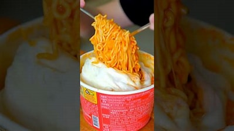

Let's make different types of ramen recipe!
1. Cheese spaghetti tteokboki:
Ingredients:
- 1. Any type of ramen( cheese spaghetti type ramen is recommended);
- 2. Any type of tteokboki;
- 3. Sausage , salami , or any type of protien.
- 4. Cheese

Steps:
- 1. Prepare the ramen and the tteokboki, using the instructions on the packet.
- 2. Combine the ramen in the tteokboki bowl and mix it for a few seconds.
- 3. Cut into slices some protiens and some cheese.
- 4. Put it in the microwave, and wait for a few minutes, until the cheese melts.
THAT'S IT! Bon Appetito!
2. Spicy Garlic Butter Ramen
Ingredients:
- 1 pack instant ramen (any flavor)
- 1 tbsp butter
- 2 cloves garlic, minced
- 1 tsp soy sauce
- 1 tsp chili flakes (adjust to taste)
- 1 egg, boiled or poached
- Green onions, chopped (for garnish)
Steps:
- Cook the instant ramen noodles according to the package instructions (use half of the seasoning packet or as desired).
- In a small pan, melt butter over medium heat. Add garlic and sauté until fragrant.
- Stir in soy sauce and chili flakes. Add the cooked noodles to the pan and toss to coat evenly.
- Serve in a bowl topped with a boiled or poached egg and garnish with green onions.
THAT'S IT! Bon Appetito!